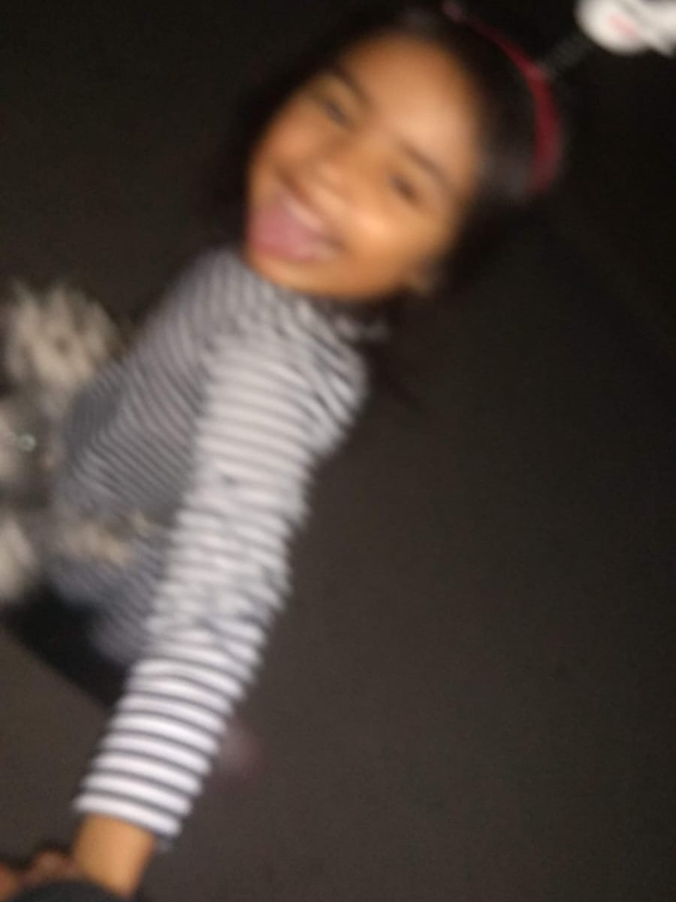
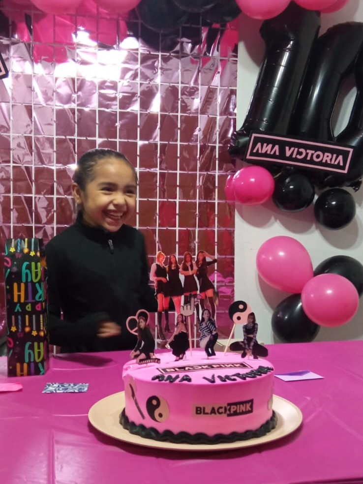

30 de junio de 2014: esta es la foto más antigua que encontré en mi celular. Originalmente te iba a tomar la foto a ti porque te estabas metiendo algo a la oreja jajajaja, pero mami se acomodó contigo y les tomé la foto a las dos.
23 de julio de 2014: te veías muy chistosa cuando hacías pucheros de la nada, así que te pedí que lo hicieras para tomarte esa foto.
25 de octubre de 2014: te encantaba esa muñeca bebé y la llevabas a todos lados, no recuerdo que nombre le pusiste pero le agarraste mucho cariño.
Te tomé esa foto 20 minutos después de la anterior. Casi puedo recordar tus carcajadas de bebé.
15 de noviembre de 2014: ya hacen casi 9 años de esta foto. Esta en particular es muy especial para mí, porque se nota tu ternura de bebé en tus manitas y en tus ojitos emocionados por escuchar "las mañanitas" cantadas para tí.
27 de marzo de 2015: sentadita en casa de Tía Maía, esperando a que mami fuera a recogerte.

16 de diciembre de 2017: ahora damos un salto por los años, pasando por muchas fotos perdidas :(. Ese día andabas de ocurrente (como siempre) y te pusiste tu mejor outfit hasta el día de hoy. Me morí de la risa cuando te vi.
Sin fecha, pero antes del 27 de julio de 2018 (larga historia): una Vicky con una sombrilla del doble de su tamaño y una blusa que le queda como vestido, un suceso que aún se puede presenciar.
Sin fecha, como la anterior: no se aprecia tan bien, pero además de labial embarrado también te pusiste rímel en el párpado, una obra de arte abstracto.
31 de octubre de 2018: sip, eso en tu brazo es saliva. Te quedaste dormida en camino a recogerme porque fui a pedir Halloween en casa de Kanela. Ya sin disfraz pero las flores de catrina intactas.
23 de noviembre de 2018: echando chisme con la comadre en medio del show infantil de tu cumpleaños 6.
1 de diciembre de 2018: ibas corriendo de mi mano, con tu bolsita de perrito y una diademita chistosa. Mis fotos favoritas siempre son las más borrosas.
3 de diciembre de 2018: "-[Mira una] changuita. -Es una bola". No recuerdo por qué llegaste llorando a mi cuarto, pero parecías una changuita porque me abrazaste y no te soltabas.
30 de diciembre de 2018: simplemente te veías muy cute toda despeinada y con la diademita, motivo suficiente para tomarte más de una foto.
21 de febrero de 2019: recuerdo que hasta le hablé a mami para que fuera a ver lo tierna que te veías dormidita. Por alguna razón siempre te encuentro muy tierna, pero a veces ni la cámara me comprende.
6 de marzo de 2019: el día que Ilsse fue a la casa porque nos iban a tomar las fotos de graduación. Tú fuiste a la escuela como siempre, no sin antes llegar a molestar aunque sea un poquito.
18 de marzo de 2019: un dibujito que me hiciste. Aparentemente simple, pero para mí fue inexplicablemente lindo, tanto que no pude arriesgarme a perderlo entre los papeles.
19 de abril de 2019: no importa donde sea, tu personalidad única siempre resalta. Como te habrás dado cuenta ya, tus ocurrencias nunca faltan, ni están de más.
23 de junio de 2019: simepre me haces segunda en todo, tanto que esta es una de las muchas fotos que te he pedido para mandar a las patos.
6 de abril de 2021: ¡llegamos a los momentos que ya recuerdas a la perfección! Aunque parece ser una foto mal tomada, a mí me encanta porque así eres tú, genuina.
10 de noviembre de 2021: aquí ya tienes 9 años, pero todos aún vemos a la bebita de 2 que se emociona por soplar sus velitas.

17 de diciembre de 2021: ambas aguantando el sol que nos está apuntando a los ojos, o... bueno, tú no tanto. No importa, porque es mi foto favorita de las dos.
Un día lleno de poses y fotos icónicas. Desde que llegaste a esta vida no ha habido un día aburrido.
20 de marzo de 2022: y sé que yo soy más gorrosa que tú, pero te va a tocar aguantarte porque te quiero, y me quieres.
25 de marzo de 2022: un día después de recibir al más reciente integrante de la familia. No podías seguir siendo tú la más chiquita.
12 de noviembre de 2022: tu sonrisa espontánea siempre hace la mejor fotografía. Ya es un año después de esta foto, y solo nos queda esperar los momentos juntas que nos faltan por vivir.